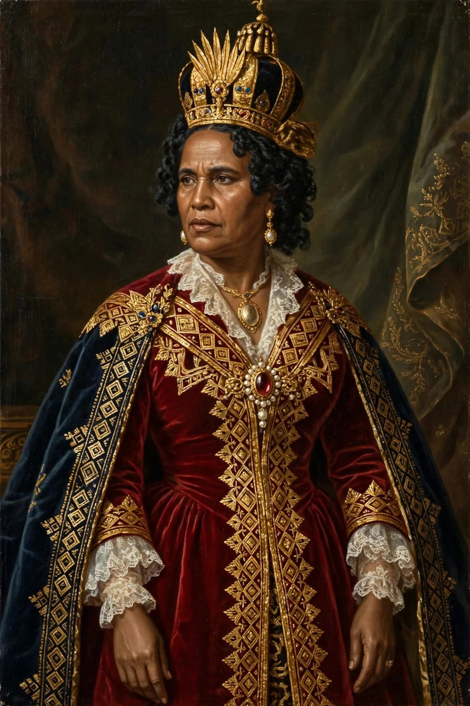

Ranavalona I
| Ranavalona I | |
|---|---|
| Reign | 1828–1861 |
| Born | c. 1778–1782 |
| Died | 16 August 1861, Antananarivo |
| Predecessor | Radama I |
| Successor | Radama II |
Ranavalona I (c. 1778–1861), born Rabodoandrianampoinimerina, was Queen of Madagascar from 1828 to 1861. She pursued a policy of isolationism and self-sufficiency, reversing many of her husband Radama I's modernising reforms, expelling foreign missionaries and persecuting Malagasy Christians.

1. Accession
2. Persecution of Christians
3. Isolation and self-sufficiency
4. Death and legacy
Accession
As the principal wife of King Radama I, Ranavalona seized the throne on his death in 1828, eliminating rival claimants. She announced a return to traditional Malagasy values (fomba gasy) and ancestral religion.
Persecution of Christians
In 1835 she banned Christianity for Malagasy subjects and expelled the London Missionary Society missionaries who had brought literacy and the Malagasy Bible. Converts who refused to renounce their faith were subjected to forced labour, ordeals such as the tangena poison test, imprisonment and execution; historians estimate that thousands died.
Isolation and self-sufficiency
Ranavalona rejected foreign trade treaties and built domestic industry — including an arms and manufacturing complex at Ilafy under the French artisan Jean Laborde — sustained by fanompoana, uncompensated labour owed to the sovereign. Historians estimate Madagascar's population may have fallen drastically during her reign through war, disease and harsh labour demands.
Death and legacy
She died in 1861 and was succeeded by her son Radama II, who reopened the kingdom to foreigners almost at once. Modern assessments remain divided between her image as a cruel tyrant and nationalist praise for keeping Madagascar independent of European colonialism for three more decades.
See also: London Missionary Society · Madagascar · Malagasy language